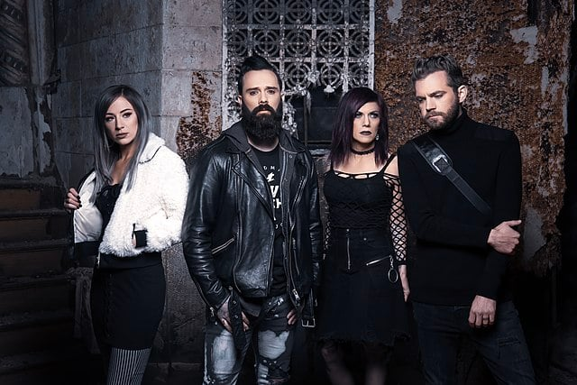
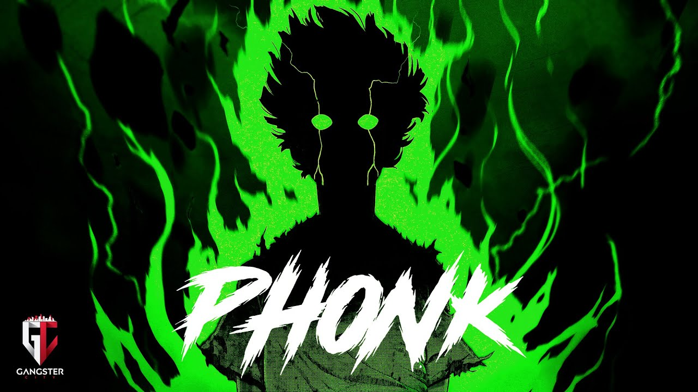

En lo personal la musica es algo hermoso ya que me permite relajarme, motivarme, o darme animos dependiendo la situacion y cancion.
Por ejemplo una banda de rock que me motiva y que me gusta mucho es: skillet

Actualmente son 4 integrantes que cumplen diferentes roles:
John Cooper: Voz principal, Bajo ,Guitarra Acustica hasta hoy en dia. en el pasado tambien tocaba el teclado.
Korey Cooper: teclados, sintetizadores, guitarra rítmica y coros hasta hoy en dia.
Jen Ledger: bateria, coros y voz hasta hoy en dia.
Seth Morrison: guitarra principal y coros hasta hoy en dia
Son una banda de rock cristiano
UN POCO DE SU HISTORIA
de skillet
Skillet se formó en Memphis, Tennessee en 1996 cuando John Cooper, y Ken Steorts decidieron formar una banda; poco después, Trey McClurkin se unió a la banda como baterista.
Skillet compaginó su gira de presentación con la preparación del siguiente álbum, titulado Hey You, I Love Your Soul, lanzado en abril de 1998. Pronto se uniría a la formación Korey Cooper, la esposa de John, para tocar los teclados.
Poco antes de que la banda comenzara la grabación de su tercer álbum, Steorts dejó la banda y fue sustituido por Kevin Haaland. Después del lanzamiento de Invincible, Trey McClurkin dejó la banda y fue reemplazado por la baterista Lori Peters.
Con poco tiempo entre giras, Skillet grabó su quinto álbum, Alien Youth, y fue lanzado el 28 de agosto del 2001. Antes de su lanzamiento, Haaland dejó la banda y Ben Kasica se hizo cargo de la guitarra.
En 2003, Collide fue lanzado por Ardent Records. A partir de este año Korey asume la guitarra rítmica. Collide llamó la atención de Lava Records, una división de Atlantic Records, compañía que luego compraría sus derechos y lo relanzó con una canción adicional, "Open Wounds".
El álbum Comatose fue lanzado el 3 de octubre de 2006 debutando en el puesto número 55 en el Billboard 200 y número 4 en la lista de música cristiana.En enero de 2008, Lori Peters se retiró de la banda y se dedicó a entrenar a su reemplazo, Jen Ledger.
Skillet entró al estudio para grabar con el productor nominado al Grammy Howard Benson. El álbum, titulado Awake, fue lanzado el 25 de agosto de 2009. Se ubicó en el puesto #2 en el Billboard Top 200, vendiendo más de 100.000 unidades en su primera semana. Skillet obtuvo tres Premios Billboard y fue nominado a seis para la 41ª entrega de Dove Awards. Comatose fue certificado Oro por RIAA el 3 de noviembre.
El 14 de febrero del 2011 Skillet anunció que Ben Kasica deja la banda, y, a partir del 16 de abril, Seth Morrison lo sustituye
El siguiente genero POP es uno muy escuchado y tambien es muy comun escucharlo sin saberlo.
Es en los años cincuenta cuando la expresión pop music comienza a sonar con más fuerza. Eran los tiempos en los que el rock and roll estaba en auge y se utilizaba la palabra pop para referirse a las melodías más suaves dentro del rock.
Fue en los años sesenta cuando se dio el pistoletazo de salida al cambio. Mientras en Estados Unidos Elvis Presley vive su momento de gloria, el rock and roll llega a Inglaterra y comienza a adquirir matices de otros estilos. De esta forma, se puede considerar que Liverpool es el lugar de nacimiento de la música pop. Así fue como, durante estos años, los músicos y grupos británicos se expandieron a nivel internacional, extendiendo el estilo pop con ellos. Bandas como The Beatles llenaban las listas de éxitos con sus canciones que daban la vuelta al mundo. En este momento la música pop ya era considerada totalmente opuesta al rock.
Los jóvenes fueron clave en el desarrollo de la música pop. Los medios de comunicación, especialmente la radio, también fueron elementos protagonistas, con programas musicales dirigidos a una audiencia joven y, evidentemente, con música pop. Los conciertos también jugaron un papel clave, considerándose el primer concierto pop de la historia el Festival Internacional de Música Pop de Monterey en California en el año 1967.
Entre las representaciones más juveniles del género pop, no podemos olvidar las Boy Band o Girl Band como Backstreet Boys o Spice Girls, al igual que cantantes como la considerada princesa del pop Britney Spears.
Actualmente, el género pop continúa vivo y multitud de artistas mundiales siguen apostando por este estilo musical, como Katy Perry, Miley Cyrus, Ariana Grande, Justin Bieber, Taylor Swift, Bruno Mars, Adele, Zara Larsson, Meghan Trainor, Maroon 5 y un larguísimo etcétera. Todos ellos con audiencias masivas, tal y como caracteriza la música pop.
El phonk, un genero que me gusta bastante, es el mejor genero despues del rock para motivacion, al menos en mi opinion.
se inspiró en el trap con raíces en el sur de Estados Unidos de mediados de los 90.

pistas de voz desaceleradas, graves y reverberadas con algunos filtros de frecuencia altos y bajos. Las melodías principales se hacen con cowbells con 808 saturados o distorsionados, las sidechains también son bastante utilizadas en las pistas de sintetizadores, que también suelen ser samples de otras canciones.
Lo peculiar del phonk es el hecho de que no está anclado a una escena regional concreta: esto es así debido a su difusión, que principalmente es a través de SoundCloud y YouTube, que son plataformas en línea que permiten un consumo mundial. Gracias a que SoundCloud destaca los subgéneros derivados de hip hop y pop experimental, el Phonk ha ido creciendo tras 2019.
aca dejo una lista de 10 canciones ordenadas de mis favoritas de los 3 generos de musica de los que hable en la pagina